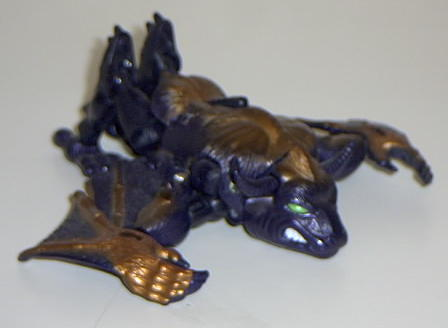
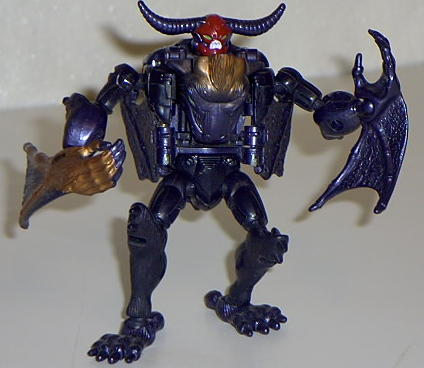

Noctorro
Noctorro


Allegiance
: Maximal
Size
: Basic
Difficulty of Transformation
: Easy
Color Scheme
: Blue-black and gold,
with a little bit of red, green, and white
Rating
: 6.2
Beast mode is a bull
with small wings in its front arms and two chicken-like legs. It cant
stand up at all in this mode, and I think they could at least have given
it two front legs. His wings can flap by pressing a button on his back
although his lower half of his wings tend to disconnect from the upper
parts easily.
Robot mode looks nice,
with few extras. His wings sort of hang off his hands, and his springs
on his lower wings may not stay when you bend them back to his sides, but
his face is nicely crafted with huge horns, as his his legs. His arms are
movable at the wrists, which is very rare. He has no weapons, though, which
is sort of disappointing.
A nicely done robot
in robot mode, but is unbalanced in beast mode.
Noctorro Bio:
FUNCTION: Airborne Warrior
Quick tempered, strong as a bull, and
fast as ultra-sound, Noctorro blasts through the night air securing Maximal
outposts and performing recon missions. Fierce, efficient and highly dangerous
when angered, Noctorro is no Maximal to be toyed with. His immense strength
and speed let him go without heavy weaponry in battle, preferring to rely
instead on his powerful horns, arms, and claws - a fact of which he is
very proud. His highly sensitive sonar tracking mechanism can be used to
locate Predacons and confuse their radar systems.
Strength: 8.0
Intelligence: 8.0
Speed: 7.0
Endurance: 7.0
Rank: 4.0
Courage: 8.0
Firepower: 4.0
Skill: 6.0
Review by Beastbot
Back to Fuzors
Index